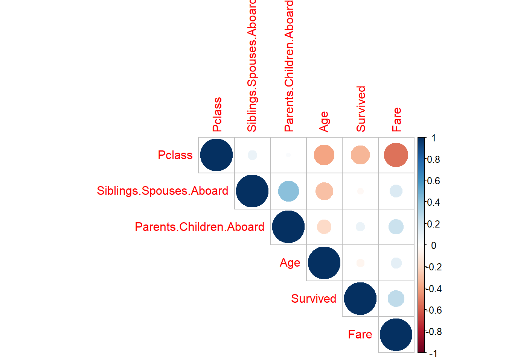

Installing dplyr [1.1.1] ...
OK [linked cache in 3.3 milliseconds]
Installing purrr [1.0.1] ...
OK [linked cache in 2.3 milliseconds]
Installing stringr [1.5.0] ...
OK [linked cache in 2.3 milliseconds]
Installing tidyr [1.3.0] ...
OK [linked cache in 2.4 milliseconds]
Installing broom [1.0.4] ...
OK [linked cache in 2.4 milliseconds]
Installing readr [2.1.4] ...
OK [linked cache in 2.4 milliseconds]
Installing tidyverse [2.0.0] ...
OK [linked cache in 7.1 milliseconds]
Installing corrplot [0.92] ...
OK [linked cache in 2.2 milliseconds]
Installing nnet [7.3-18] ...
OK [linked cache in 2.2 milliseconds]
Installing car [3.1-2] ...
OK [linked cache in 2.3 milliseconds]
Installing caret [6.0-94] ...
OK [linked cache in 2.4 milliseconds]
Installing torch [0.9.1] ...
OK [linked cache in 2.8 milliseconds]
sapply(packages, require, character.only=T)
Loading required package: tidyverse
Warning: package 'tidyverse' was built under R version 4.2.2
Warning: package 'tibble' was built under R version 4.2.3
Warning: package 'tidyr' was built under R version 4.2.2
Warning: package 'readr' was built under R version 4.2.2
Warning: package 'purrr' was built under R version 4.2.2
Warning: package 'dplyr' was built under R version 4.2.3
Warning: package 'stringr' was built under R version 4.2.2
Warning: package 'forcats' was built under R version 4.2.2
Warning: package 'lubridate' was built under R version 4.2.2
── Conflicts ────────────────────────────────────────── tidyverse_conflicts() ──
✖ dplyr::filter() masks stats::filter()
✖ dplyr::lag() masks stats::lag()
ℹ Use the conflicted package (<http://conflicted.r-lib.org/>) to force all conflicts to become errors
Loading required package: corrplot
Warning: package 'corrplot' was built under R version 4.2.3
corrplot 0.92 loaded
Loading required package: car
Warning: package 'car' was built under R version 4.2.3
Loading required package: carData
Warning: package 'carData' was built under R version 4.2.2
Attaching package: 'car'
The following object is masked from 'package:dplyr':
recode
The following object is masked from 'package:purrr':
some
Loading required package: caret
Warning: package 'caret' was built under R version 4.2.3
Loading required package: lattice
Attaching package: 'caret'
The following object is masked from 'package:purrr':
lift
Loading required package: torch
Warning: package 'torch' was built under R version 4.2.2
Loading required package: nnet
Warning: package 'nnet' was built under R version 4.2.3
Loading required package: broom
Warning: package 'broom' was built under R version 4.2.3
Using your answer from above, what is the answer to \[
\frac{d}{dx}g(x, y) \Bigg|_{(x=3, y=4)} \quad \text{and} \quad \frac{d}{dy}g(x, y) \Bigg|_{(x=3, y=4)} ?
\]
x <-torch_randn(3, requires_grad=T)y <-torch_randn(4, requires_grad=T)c(x, y)
f <-function(x, y){ (x -3)^2+ (y -4)^2}g <-f(3, 4)g
[1] 0
#g$backward#c(x$grad, y$grad)
Define \(g(x, y)\) as a function in R, compute the gradient of \(g(x, y)\) with respect to \(x=3\) and \(y=4\). Does the answer match what you expected?
Define \(h(\u, \v)\) as a function in R, initialize the two vectors \(\u\) and \(\v\) as torch_tensors. Compute the gradient of \(h(\u, \v)\) with respect to \(\u\). Does the answer match what you expected?
1.3 (5 points)
Consider the following function \[
f(z) = z^4 - 6z^2 - 3z + 4
\]
Derive the expression for \[
f'(z_0) = \frac{df}{dz}\Bigg|_{z=z_0}
\] and evaluate \(f'(z_0)\) when \(z_0 = -3.5\).
Define \(f(z)\) as a function in R, and using the torch library compute \(f'(-3.5)\).
1.4 (5 points)
For the same function \(f\), initialize \(z[1] = -3.5\), and perform \(n=100\) iterations of gradient descent, i.e.,
Plot the curve \(f\) and add taking \(\eta = 0.02\), add the points \(\{z_0, z_1, z_2, \dots z_{100}\}\) obtained using gradient descent to the plot. What do you observe?
1.5 (5 points)
Redo the same analysis as Question 1.4, but this time using \(\eta = 0.03\). What do you observe? What can you conclude from this analysis
—
Question 2
50 points
Logistic regression and interpretation of effect sizes
For this question we will use the Titanic dataset from the Stanford data archive. This dataset contains information about passengers aboard the Titanic and whether or not they survived.
2.1 (5 points)
Read the data from the following URL as a tibble in R. Preprocess the data such that the variables are of the right data type, e.g., binary variables are encoded as factors, and convert all column names to lower case for consistency. Let’s also rename the response variable Survival to y for convenience.
[1] male female female female male male male male female female
[11] female female male male female female male male female female
[21] male male female male female female male male female male
[31] male female female male male male male male female female
[41] female female female female male male female male female male
[51] male female female male male female male female male male
[61] female male male male male female male female male male
[71] female male male male male male male male female male
[81] male female male female female male male female male male
[91] male male male male male male male female male female
[101] male male male male male female male male female male
[111] female male female female male male male male female male
[121] male male female male male male male female male male
[131] male female female male male female male male male female
[141] female female male male male male female male male male
[151] female male male male male female male male male male
[161] female male male male male female female male male male
[171] male female male male male male female male male female
[181] male male male female male female male male male female
[191] male female male female female male male female female male
[201] male male male male female male male female male male
[211] female male male male female female male female male male
[221] male male male male male male male male female female
[231] male male female male female male female male male female
[241] female male male male male female female male male male
[251] female male male female female female female female female male
[261] male male female male male male female female male male
[271] female male female female female male male female male male
[281] male male male male male male male female female female
[291] male female male male male female male female female male
[301] male female male male female female male female female female
[311] female male male female female male female female male male
[321] female female male female male female female female female male
[331] male male female male male female male male male female
[341] male male male female female female male male male male
[351] male male male male female female female female male male
[361] female male male male female female female female male male
[371] male male female female female male male male female female
[381] male female male male male female male female male male
[391] male female female male female male male female male male
[401] female male female male male male male female male male
[411] female male male female female female male female male male
[421] female male male female female male male male female female
[431] male male female female female male male female male male
[441] female male male female male female male male male male
[451] male male male male female female male male male male
[461] male male male male male male female male male female
[471] female female male male male male female male male male
[481] female male female female male male male male male male
[491] male male male female male female male male female female
[501] female female male female male male male male male male
[511] female male male female male female male female male male
[521] female male male female male male male female male male
[531] female female female male female male female female female female
[541] male male male female male male male male male male
[551] male female male female male female female male male male
[561] male female male male female male male male female male
[571] female male male female female female male female female male
[581] male male female male male male male male female male
[591] female male male female male male male female male male
[601] male male male male male female female female male female
[611] male male female male female female male male male male
[621] male male male male female male male male male male
[631] male female female male male female male male female female
[641] male female male male male male female male female male
[651] female female male male female male male male male male
[661] male male male male male male female female male male
[671] male male male male female female male female male male
[681] male male male male male male female male female male
[691] male male male male female male male female male female
[701] male male male female male female male female male male
[711] male male male female female male female male male male
[721] male male female female male female female male male male
[731] male male female male male male male male female male
[741] male male male female male male female male male male
[751] female male male male male female male male male female
[761] male female male female male male male male female male
[771] female male male female male female female female male male
[781] male male female male male male male male female male
[791] male male female female male female male female male male
[801] male male male female male female male male male female
[811] male male female male male male female male male female
[821] male male male male male female female male male male
[831] male female male male male male male male female male
[841] male male male male male female male male female female
[851] female female female male female male male male female female
[861] male female female male male male male female male male
[871] female female male male male female female male female male
[881] male female male female female male male
Levels: female male
2.2 (5 points)
Visualize the correlation matrix of all numeric columns in df using corrplot()
library(corrplot)#first make framedf2 <- df %>%keep(is.numeric) %>%cor()corrplot(df2, type="upper", order="hclust")

2.3 (10 points)
Fit a logistic regression model to predict the probability of surviving the titanic as a function of:
Call:
glm(formula = Survived ~ Pclass + Sex + Age + Fare + Siblings.Spouses.Aboard +
Parents.Children.Aboard, family = "binomial", data = df)
Deviance Residuals:
Min 1Q Median 3Q Max
-2.7789 -0.5976 -0.3987 0.6156 2.4409
Coefficients:
Estimate Std. Error z value Pr(>|z|)
(Intercept) 5.297252 0.557409 9.503 < 2e-16 ***
Pclass -1.177659 0.146079 -8.062 7.52e-16 ***
Sexmale -2.757282 0.200416 -13.758 < 2e-16 ***
Age -0.043474 0.007723 -5.629 1.81e-08 ***
Fare 0.002786 0.002389 1.166 0.243680
Siblings.Spouses.Aboard -0.401831 0.110712 -3.630 0.000284 ***
Parents.Children.Aboard -0.106505 0.118588 -0.898 0.369127
---
Signif. codes: 0 '***' 0.001 '**' 0.01 '*' 0.05 '.' 0.1 ' ' 1
(Dispersion parameter for binomial family taken to be 1)
Null deviance: 1182.77 on 886 degrees of freedom
Residual deviance: 780.93 on 880 degrees of freedom
AIC: 794.93
Number of Fisher Scoring iterations: 5
2.4 (30 points)
Provide an interpretation for the slope and intercept terms estimated in full_model in terms of the log-odds of survival in the titanic and in terms of the odds-ratio (if the covariate is also categorical).
Beta0 : e^B0 = 199.787
Interpretation :
Beta1 :
Beta2 :
Beta3 :
Beta4 :
Beta5 :
Beta6 :
Recall the definition of logistic regression from the lecture notes, and also recall how we interpreted the slope in the linear regression model (particularly when the covariate was categorical).
—
Question 3
70 points
Variable selection and logistic regression in torch
3.1 (15 points)
Complete the following function overview which takes in two categorical vectors (predicted and expected) and outputs:
Using the caret package, setup a \(5\)-fold cross-validation training method using the caret::trainConrol() function
control <-trainControl(method ="cv", number =5)
Now, using control, perform \(5\)-fold cross validation using caret::train() to select the optimal \(\lambda\) parameter for LASSO with logistic regression.
Take the search grid for \(\lambda\) to be in \(\{ 2^{-20}, 2^{-19.5}, 2^{-19}, \dots, 2^{-0.5}, 2^{0} \}\).
Using the information stored in lasso_fit$results, plot the results for cross-validation accuracy vs. \(log_2(\lambda)\). Choose the optimal \(\lambda^*\), and report your results for this value of \(\lambda^*\).
3.5 (25 points)
First, use the model.matrix() function to convert the covariates of df to a matrix format
covariate_matrix <-model.matrix(full_model)[, -1]
Now, initialize the covariates \(X\) and the response \(y\) as torch tensors
X <-torch_tensor(covariate_matrix,dtype=torch_float())y <-torch_tensor(df$Survived,dtype=torch_float())
Using the torch library, initialize an nn_module which performs logistic regression for this dataset. (Remember that we have 6 different covariates)
You can verify that your code is right by checking that the output to the following code is a vector of probabilities:
'f(X)'
[1] "f(X)"
Now, define the loss function Loss() which takes in two tensors X and y and a function Fun, and outputs the Binary cross Entropy loss between Fun(X) and y.
Loss <-function(X, y, Fun){nn_bce_loss()(Fun(X), y)}
Initialize an optimizer using optim_adam() and perform \(n=1000\) steps of gradient descent in order to fit logistic regression using torch.
Create a summary table of the overview() summary statistics for each of the \(4\) models we have looked at in this assignment, and comment on their relative strengths and drawbacks.
—
Session Information
Print your R session information using the following command